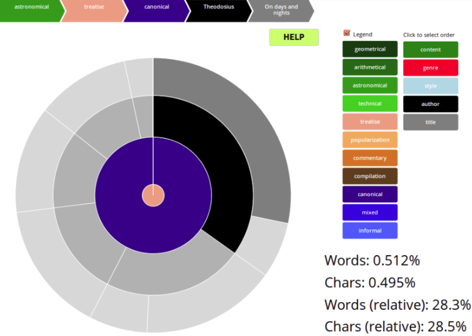

Works are classified into three categories: Content, Genre and Style and every category is represented as a ring in the sunburst. Authors and works are also represented by its own ring (black and grey respectively). A ring consists of arcs representing the percentage of words classified in that category, author or work. Categories and values can be distinguished by its colours. Look at the "Legend" to consult the colour-value correspondence.
Moving the mouse over the graph makes the hovered arcs of the graph visible.
And a breadcrumb with the names of the selected category-value sequence is showed.
At the same time, at the bottom-right part of the graph the percentage of words and chars in the current sequence is shown.
The first two percentages are in relation to the total works in the database and the second two are in relation to the currently selected works.
Some dates or data of the works contained in the database are not exact. With the blue buttons at the right part of the screen we can filter by exact/inexact data/dates. If any button is pressed it turns gray and automatically all works of the corresponding criteria are excluded and the sunburst is updated. If all buttons are grey simultaneosly then no graph will be shown because all works will be excluded.
Clicking on any arc of the graph zooms in and turns the selected arc into the new root (center) of the sunburst. This is very useful to study smaller sections of the graph in detail.

In the example above we have zoomed-in into astronomical-treatise-canonical works. The detail view shows the six authors and their corresponding works and relative percentages.
The default order of the categories, authors and works can be changed using the ordering buttons between the legend and the data/date buttons. The first button corresponds to the center of the graph and so on.
Clicking on one of this buttons makes it change its position with the category that is one place upwards.
In four words: CLICK TO MOVE UP.
If the selected category is already at the first place then its position is changed with the last one of the list.
The graph is updated automatically with every change.